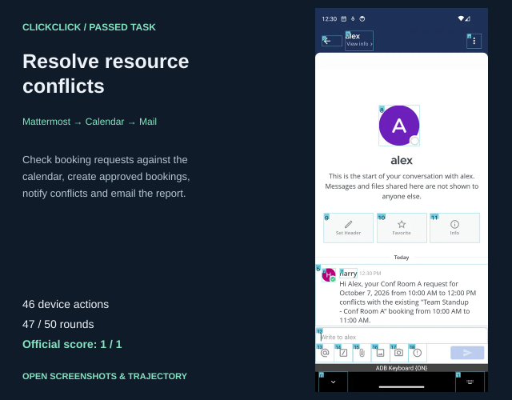
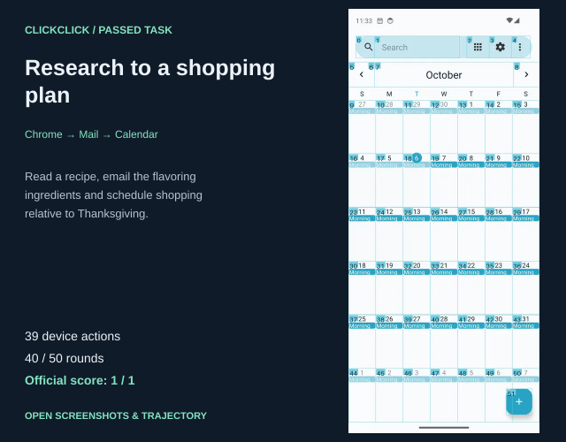
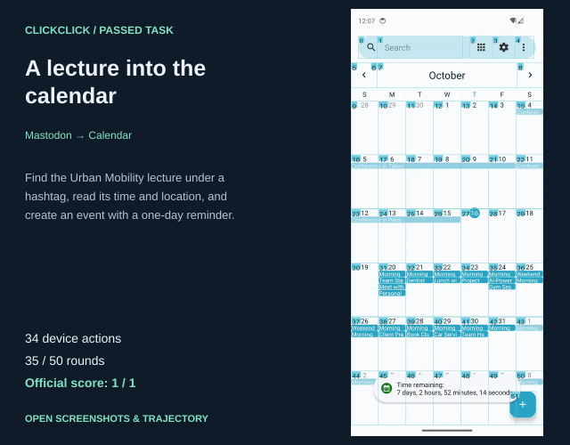
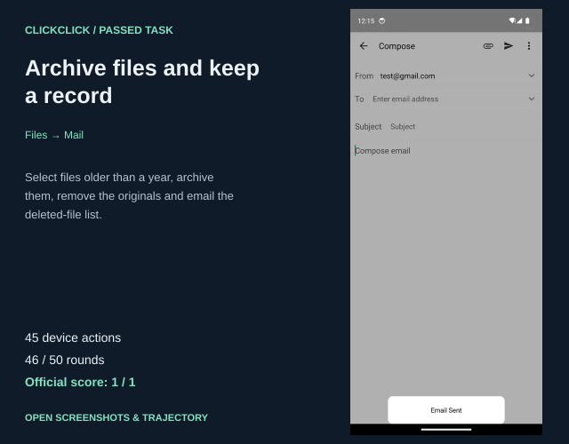
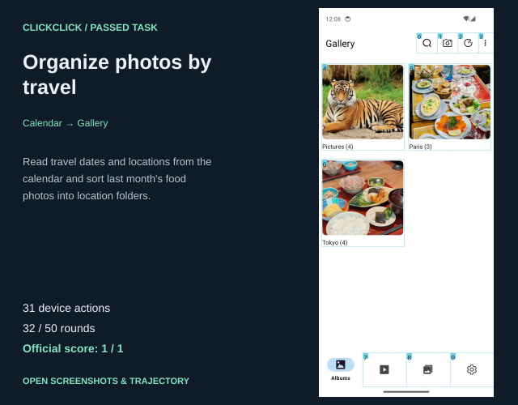
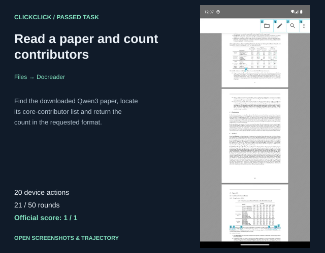
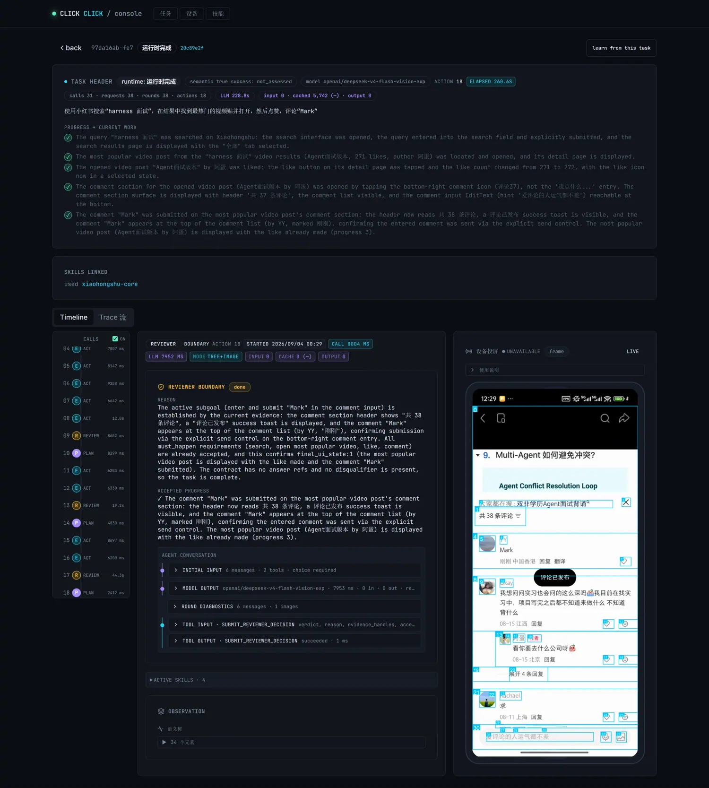

Plan and adapt
Break a request into stages, react to new screen evidence, and continue from completed work.
Describe a goal in natural language. ClickClick plans the work, operates Android apps, and shows you what happened at every step.

Planner sets the current stage, Executor acts on the device screen, and Session retains notes and execution records.
Break a request into stages, react to new screen evidence, and continue from completed work.
Read source information, fill forms, manage collections, and carry task context between apps.
See screenshots, model decisions, active skills, action receipts, and the resulting device state.
Six passed tasks from the latest MobileWorld run. Open a case to inspect its score, screenshots, planning decisions and device actions.
Check booking requests against the calendar, create approved bookings, notify conflicts and email the report.
VIEW CASE ↗ · PASS
Read a recipe, email the flavoring ingredients and schedule shopping relative to Thanksgiving.
VIEW CASE ↗ · PASS
Find the Urban Mobility lecture under a hashtag, read its time and location, and create an event with a one-day reminder.
VIEW CASE ↗ · PASS
Select files older than a year, archive them, remove the originals and email the deleted-file list.
VIEW CASE ↗ · PASS
Read travel dates and locations from the calendar and sort last month's food photos into location folders.
VIEW CASE ↗ · PASS
Find the downloaded Qwen3 paper, locate its core-contributor list and return the count in the requested format.
VIEW CASE ↗ · PASSThe web Console connects live device state with the full execution timeline. Open a step to inspect its screenshot, model input, decision, tools, and action result.
How the Console works ↗
112/117 (95.73%) with clarified instructions. Original wording also reaches 106/117 (90.60%). Both exceed the published GUI-only rows checked on October 7, 2026.
Results, ranking and clarifications ↗GUI-only task success
115 of 116 task instances passed AndroidWorld's official success checks with GPT-5.6-SOL. Explore every task, score, and saved step screenshot.
Open the results ↗official task success